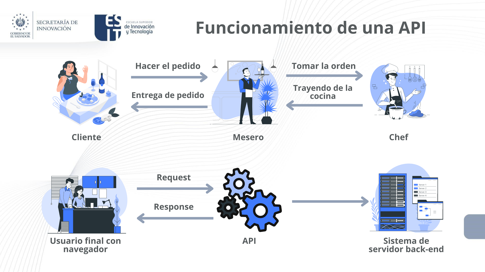

3. Cloud Computing y Programación
4. API
Una API, o interfaz de programación de aplicaciones, es un conjunto de reglas definidas que permiten que diferentes aplicaciones se comuniquen entre sí. Actúa como una capa intermedia que procesa las transferencias de datos entre sistemas, permitiendo a las empresas abrir sus datos y funcionalidades de aplicaciones a desarrolladores externos, socios comerciales y departamentos internos dentro de sus empresas.
Las definiciones y protocolos dentro de una API ayudan a las empresas a conectar las diferentes aplicaciones que utilizan en las operaciones diarias, lo que ahorra tiempo a los empleados y rompe los silos que dificultan la colaboración y la innovación. Para los desarrolladores, la documentación de API proporciona la interfaz para la comunicación entre aplicaciones, simplificando la integración de aplicaciones.
Breve historia de las API
Las API surgieron en los comienzos de la informática, mucho antes que la computadora personal. En esa época, una API normalmente se usaba como biblioteca para los sistemas operativos. Casi siempre estaban habilitadas localmente en los sistemas en los que operaban, aunque a veces pasaban mensajes entre las computadoras centrales. Después de casi 30 años, las API se expandieron más allá de los entornos locales. A principios del año 2000, ya eran una tecnología importante para la integración remota de datos.
Funcionamiento de una API
Comencemos imaginando una API como un camarero en un restaurante:
- El cliente (aplicación 1) solicita un plato al camarero (API).
- El camarero (API) toma la orden y la lleva a la cocina (aplicación 2).
- La cocina (aplicación 2) prepara el plato y lo envía al camarero (API).
- El camarero (API) entrega el plato al cliente (aplicación 1).

Obra publicada con Licencia Creative Commons Reconocimiento Compartir igual 4.0